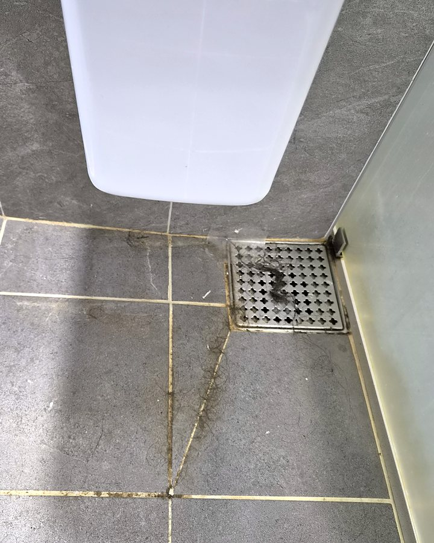
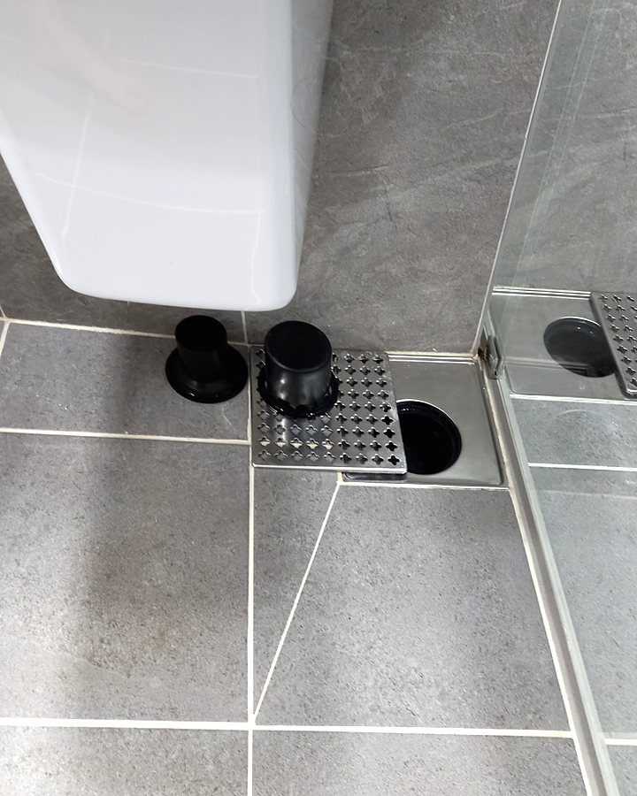

보이지 않는 곳까지,
새 집처럼.
줄눈 사이 곰팡이, 배수구 속 찌든 때까지.
정도클린은 눈에 띄지 않는 곳부터 바꿉니다.
- 추가 비용은 동의 후에만
- 실제 작업 사진 공개
- 상담 07:00 ~ 23:00


← 좌우로 밀어서 비교해 보세요 · 정도클린 실제 작업 현장
공간에 맞는 청소를 고르세요
같은 청소도 공간마다 손이 가는 곳이 다릅니다. 필요한 작업만 정확히 안내합니다.
입주청소
새 집에 들어가기 전, 시공 먼지와 잔여물까지 처음 상태로.
- 전 공간 먼지 · 시공 잔여물
- 욕실 · 주방 · 베란다 · 창틀
- 붙박이장 · 수납장 내부
이사청소
짐을 뺀 뒤 쌓인 생활 오염과 찌든 때를 집중 제거.
- 주방 기름때 · 후드
- 욕실 물때 · 곰팡이
- 바닥 · 걸레받이 · 문틀
사이청소
이사 나가고 들어오는 사이, 급한 일정에 맞춰 진행합니다.
- 이사 시간에 맞춘 청소
- 꼭 해야 하는 공간 우선
- 입주 · 이사와 동일 단가 · 상담 필요
가정청소
거주 중인 집을 1회 또는 정기적으로 관리합니다.
- 원하는 공간 위주 선택
- 욕실 · 주방 집중 관리
- 정기 방문 일정 조율
사무실 · 상가
업무 공간과 매장을 일하기 좋은 상태로 유지합니다.
- 책상 · 바닥 · 공용공간
- 화장실 · 탕비실
- 정기 관리 계약 가능
말보다 사진으로 보여드립니다
정도클린이 직접 작업한 현장의 청소 전 · 후 모습입니다.

샤워부스 배수구
머리카락 · 물때 · 찌든때

환풍구 덮개 · 그릴
곰팡이 · 먼지 제거

주방 싱크볼 · 배수구
음식물 찌꺼기 · 오염 제거

변기 주변
황변 · 바닥 이물질

베란다 통로
바닥 얼룩 · 먼지 제거

샤워수전 · 손잡이
물때 · 얼룩 제거, 광택 복원
← 옆으로 넘겨서 더 보기
도착해서 가격이 바뀌지 않습니다
처음에 안내드린 금액 그대로 작업합니다. 낮은 가격으로 예약을 받고 현장에서 금액을 올리는 방식은 하지 않습니다.
입주청소
빈집 기준 · 새 아파트, 신축 빌라
₩12,000~ / 평
- 전 공간 먼지 · 시공 잔여물 제거
- 욕실 · 주방 · 베란다 · 창틀
- 붙박이장 · 수납장 내부
이사청소
짐을 뺀 기존 집 · 퇴거 전후
₩12,000~ / 평
- 생활 오염 · 찌든 때 집중 제거
- 욕실 물때 · 주방 기름때
- 바닥 · 걸레받이 · 문틀
사이청소
이사 사이 · 급한 일정
₩12,000~ / 평
- 이사 시간에 맞춘 급한 청소
- 꼭 해야 하는 공간 우선 진행
- 입주 · 이사와 동일 단가 · 상담 필요
가정청소
거주 중인 집 · 4시간 기준
₩120,000~ / 1회
- 원하는 공간 위주로 선택
- 욕실 · 주방 집중 관리
- 정기 방문 시 일정 조율
사무실 · 상가
평수 · 방문 주기에 따라
방문 견적
- 책상 · 바닥 · 공용공간
- 화장실 · 탕비실 관리
- 업무 시간 외 · 정기 계약 협의
← 옆으로 넘겨서 더 보기
기본 금액에 포함
- 바닥 · 걸레받이
- 욕실 전체
- 주방 · 후드 · 싱크
- 베란다
- 창틀 · 실내 유리
- 문 · 문틀
- 수납장 내부
- 스위치 · 콘센트 커버
별도 견적 (사전 안내 후 진행)
- 외부 유리창
- 심한 곰팡이 제거
- 스티커 · 실리콘 제거
- 새집증후군 시공
필요하신 경우 상담 때 금액을 함께 안내드리며, 원하실 때만 진행합니다.
정도클린 가격 약속
안내한 금액 그대로
상담 때 알려주신 평수와 상태를 기준으로 견적을 드리고, 현장에 도착해서 임의로 금액을 올리지 않습니다.
간혹 실제 공간이 상담 때와 다른 경우가 있습니다. 평수나 오염 상태가 상담 내용과 크게 다르면, 현장 상태를 함께 확인하고 금액을 다시 말씀드린 뒤 동의하실 때만 진행합니다.
추가 비용은 먼저 여쭙고 진행
추가 비용이 생길 수 있는 경우, 작업 전에 이유와 예상 금액을 먼저 설명드립니다. 고객님이 확인하고 동의하신 경우에만 추가 작업을 진행하며, 동의 없이 추가 비용을 청구하는 일은 없습니다.
가족에게 소개할 수 있는 청소
한 번 눈속임으로 돈을 버는 것보다, 다시 찾아주시고 가족에게 소개해 주실 만큼 만족스러운 청소를 목표로 합니다.
정도(正道)대로, 빠짐없이
이름 그대로 원칙대로 청소합니다. 한 번의 거래보다 오래 믿고 맡기실 수 있는 업체가 되는 것이 목표입니다.
보이지 않는 곳부터
눈에 잘 띄는 곳보다 놓치기 쉬운 곳을 먼저 챙깁니다. 청소의 차이는 구석에서 납니다.
결과는 사진으로 공개
스톡 이미지가 아닌, 실제 작업 현장에서 찍은 전 · 후 사진으로 결과를 보여드립니다.
마무리는 함께 확인
작업이 끝나면 고객님과 함께 둘러보고 확인합니다. 바로 확인이 어려우시면 사진으로 먼저 확인하시고, 작업 후 7일간 서비스 기간으로 미흡한 부분을 보완해 드립니다.
문의부터 마무리까지 4단계
처음 맡기셔도 어렵지 않게, 단계마다 먼저 안내해 드립니다.
- STEP 01
문의 · 상담
전화나 문자로 공간 종류, 평수, 희망 날짜를 알려주세요. 사진을 보내주시면 더 정확합니다.
- STEP 02
견적 · 예약 확정
사진과 상담 내용으로 견적을 안내드리고, 필요하면 현장을 방문합니다. 예약금 입금 후 일정이 확정됩니다.
- STEP 03
청소 진행
약속한 날짜에 방문해 안내한 범위대로 작업합니다.
- STEP 04
함께 확인 · 잔금
결과를 확인하신 뒤 잔금을 계좌이체로 받습니다. 바로 확인이 어려우면 사진으로 먼저 확인하고, 작업 후 7일간 서비스 기간으로 보완해 드립니다.
비용은 어떻게 정해지나요?
결제는 어떻게 하나요?
예약을 취소하거나 날짜를 바꿀 수 있나요?
| 작업일 5일 전까지 | 예약금 전액 환불 · 날짜 변경 무료 |
|---|---|
| 작업일 3~4일 전 | 예약금의 50% 환불 |
| 작업일 1~2일 전 · 당일 | 환불 불가 |
환불은 예약금 ₩50,000 기준입니다. 정도클린 사정으로 일정을 지키지 못하면 예약금 전액을 돌려드립니다.
이사 시간에 맞춰 급하게 청소할 수 있나요? (사이청소)
어느 지역까지 오시나요?
청소 시간은 얼마나 걸리나요?
청소할 때 집에 있어야 하나요?
작업 후 마음에 들지 않는 부분이 있으면요?
청소 도구나 세제를 준비해야 하나요?
청소 견적,
전화 한 통이면 충분합니다
공간 종류와 평수만 알려주시면 바로 상담해 드립니다.
지역 · 평수 · 청소 형태 · 희망 날짜 · 시간을 알려주시면 바로 견적 드려요